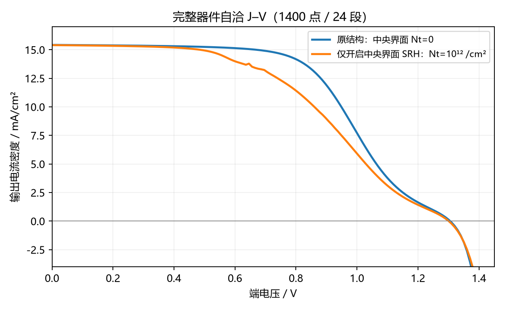
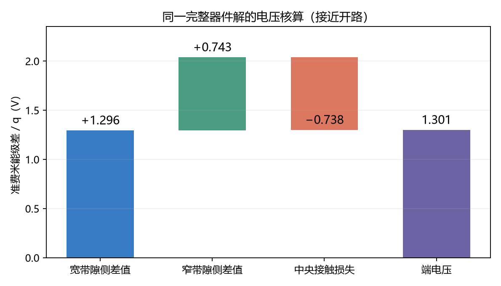
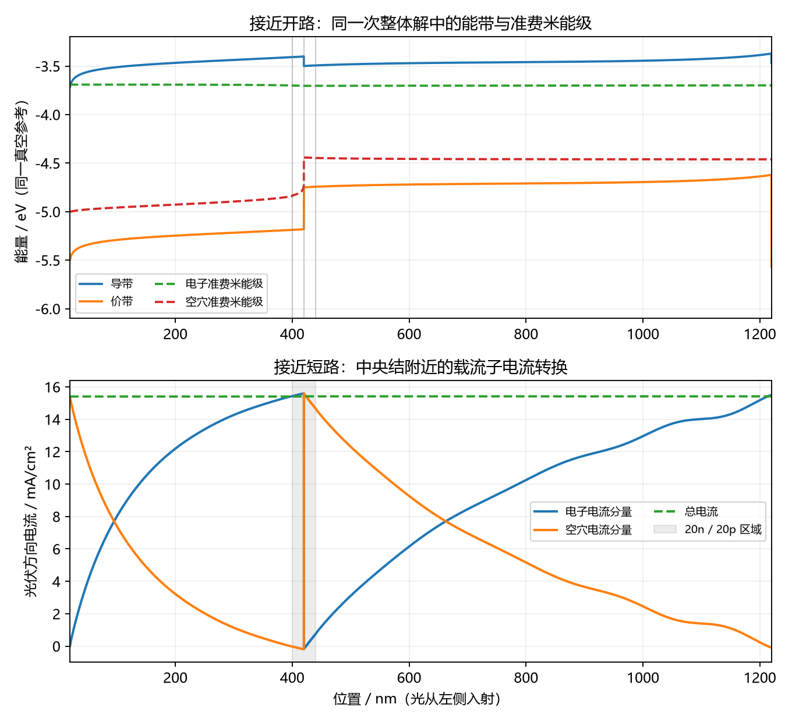

原页面完整器件中央连接核查
2026-11-15 · 原生完整器件解 · 5.36-pds2 / 软件 1.4.2
原有页面可以继续计算完整器件；本次修复了界面复合的数值线性化，没有增加虚拟内接触。当前结构仍没有实现低损耗串联，不能报告为 2 V 或 30% 器件。
结构与计算结果
NiOx 20 / 宽带隙 1.78 eV 380 / n 20 / p 20 / 窄带隙 1.25 eV 780 / C60 40 nm。中央 n/p 峰值各 10¹⁶ cm⁻³，向外渐变至 10¹⁴。χ=3.8/3.9 eV；沿用原始文献光学基准，没有混入后续减反和能级设计。仅比较中央 Nt=0 与 10¹² /cm²，后者是机制诊断参数。
细化网格后的指标变化小于 0.6%；光伏工作区电流 RMS 误差/光生电流小于 0.05%。失败的部分曲线没有作为结果。

缺失的电压消耗在中央接触
接近开路的同一次整体解：宽带隙侧抽取端准费米差 1.296 V，窄带隙侧 0.743 V，中央损失 0.738 V，最终端电压 1.301 V。这两侧差值不是单独求解的子电池 Voc，也没有用于拼接 J–V。

中央界面能转换电子、空穴电流，但仍有显著电压损失。简单增加 Nt 降低了 FF，没有使接触成为理想隧穿结。

可以保留原界面，物理连接不能省略
现有 SRH 可研究陷阱辅助连接的损耗。本次保持原有页面、按钮和材料层数量。若希望已有 n/p 两层承担高效连接，仍需要真实可实现的选择性、复合能力与材料参数；若依赖重掺杂隧穿，后台还需要相应隧穿及简并物理。现在未加入这些机制，也没有强行提高电压。
此前约 2.07 V / 29.66% 属于使用虚拟选择性内接触的独立串联参考，不能作为当前真实 n/p 接触已经有效的证据。
软件修复与源数据
修正稳态界面 SRH 雅可比；实际生产 Pascal 复合例程 128 项有限差分检查全部通过，最大相对误差 7.5×10⁻⁹。复合率与物理方程未改。界面 SRH 开启时采用较强数值松弛，超时及严格收敛条件保持有效。
参数与数据位于 原结构参数、界面 SRH 对照参数、全部指标 CSV、接近开路空间数据、接近短路空间数据。单位、数值条件及完整说明见 README。研究 ZIP 含全部原生输入与输出。